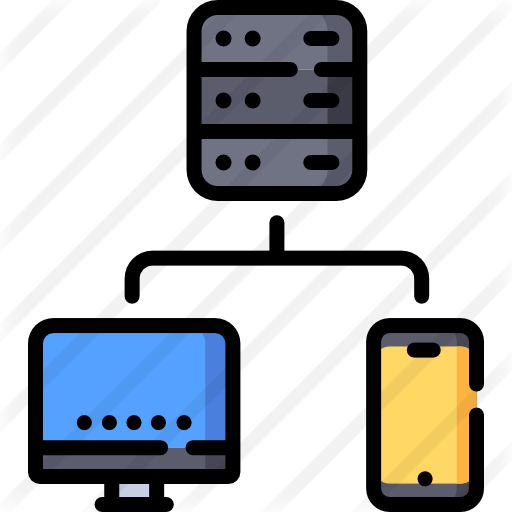

Client-Server Application
Project information
Client-server application of image processing with filters in C# on WCF technology with the client part on WPF technology.
Description:
Client side:
- Gets a list of filters known to it from the server;
- Allows you to upload an image from a file and display it on a form;
- Allows you to send an image to the server to apply a filter to it;
- While waiting for a response from the server, the interface remains responsive (that
is,
for example, you can click on
the buttons);
- While waiting for a response from the server, you can cancel the previous task;
- While waiting for a response from the server, displays the current state of readiness
on a
control like ProgressBar.
Server side:
- Loads the list of available filters from the configuration file at startup;
- Displays a list of available filters per client application request;
- Processes images received from client applications with the selected filter and
returns
the result;
- Returns the percentage of the current task readiness to the client application every
second.